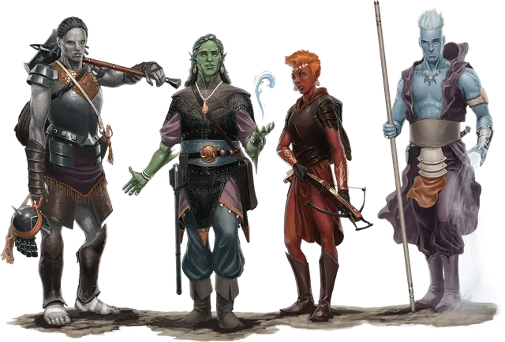

Дженази
Genasi

Большинство людей, размышляя о других планах, считают их очень далёкими мирами, но планарное влияние может проявиться в любом месте мира. Иногда оно проявляется в существах, рождённых в результате определённых обстоятельств, и несущих силу других миров в своей крови. Дженази — один из таких народов, это потомки гениев и смертных.
Стихийные Планы часто неприветливы к уроженцам Материального Плана: сокрушительная земля, иссушающее пламя, безграничные небеса и бескрайние моря делают посещение этих мест опасным даже на короткое время. Однако, сильные гении не стоят перед такими проблемами, проникая в мир смертных. Они приспособлены к смешанным стихиям Материального Плана и иногда посещают их по собственной воле или будучи призванными магией. Некоторые гении могут принимать смертный облик и путешествовать инкогнито.
Во время этих визитов смертный может привлечь внимание гения, что может перерасти в дружбу и романтические отношения, а иногда и к появлению детей. Этих детей и называют дженази: люди, имеющие связь с двумя мирами, и в тоже время не принадлежащие ни к одному из них. Некоторые дженази рождены от союза смертного и гения, у других оба родителя могут быть дженази, и очень редко те, у кого в родословной были гении, могут унаследовать его стихийную природу, которая дремала в течение нескольких поколений.
Иногда дженази могут появиться от воздействий всплеска стихийной силы, через такие явления, как прорыв Внутренних Планов или схождение планов. При таких явлениях стихийная энергия проникает в тела существ, и её может оказаться достаточно, чтобы в качестве потомства от двух смертных появился дженази.
Наследники силы стихий
Дженази наследуют что-то от обеих сторон своей двойственной природы. Они похожи на людей, но помимо необычного цвета кожи (красный, зелёный, синий или серый цвет) в них есть нечто необычное. Стихийная кровь, текущая в их венах, может проявлять себя по-разному в каждом дженази, и чаще всего как магическая сила.
Силуэтом дженази может сойти за человека. Те, у кого земляное или водное происхождение, как правило, тяжелее, в то время как воздушные и огненные, как правило, легче. Внешне дженази могут иметь черты своих смертных родителей (заострённые уши от эльфа, коренастое телосложение и густые волосы от дварфа, маленькие руки и ноги от полурослика, чрезвычайно большие глаза от гнома и так далее).
Дженази почти никогда не общаются со своими стихийными родителями. Гении редко проявляют интерес к своим смертным потомкам и рассматривают их как нелепую случайность. Многие вообще не испытывают никаких чувств к своим детям-дженази.
Некоторые дженази живут как изгои, отправленные в ссылку из-за своей необычной внешности и странной магии, другие же могут стать лидерами диких гуманоидов и странных культов в диких землях. Третьи могут занимать влиятельные посты, особенно там, где почитают стихийных существ. Некоторые дженази оставляют Материальный План, чтобы найти пристанище на домашнем плане своего родителя-гения.
Дикие и уверенные
Дженази редко испытывают недостаток в уверенности, и считают себя способными справиться с любой проблемой. Эта уверенность может проявляться как изящная уверенность в своих силах у одного дженази, и как высокомерие у другого. Такая слепая уверенность в себе может иногда заставить дженази пойти на неоправданный риск, а их большие планы часто приводят к большим неприятностям, как для самих дженази, так и их спутников.
Слишком частые неудачи могут уменьшить самомнение дженази, поэтому они всегда стремятся к идеалу, оттачивая свои таланты и совершенствуясь в своём мастерстве.
Земли дженази
Дженази так редки, что даже за всю жизнь они могут не встретить никого из своего вида. У них нет больших городов или империй. Дженази редко создают собственные общины, и обычно принимают культуру и общество, в которых они родились. Чем более странен их внешний вид, тем труднее им приходится в жизни. Многие дженази растворяются в многолюдных городах, где их внешность не привлекает внимания людей, привыкших к разнообразию народов.
Живущим на границе приходится гораздо труднее. Люди там меньше принимают различия. Холодный приём и подозрительные взгляды это лучшее, на что могут надеяться дженази; в более отсталых местах они сталкиваются с гонениями и даже насилием со стороны людей, которые ошибочно принимают их за исчадий. Не желая такой жизни, дженази ищут изоляции от мира, обустраивая свои дома в горах или лесах, возле озёр или даже под землёй.
Большая часть воздушных и огненных дженази в Королевствах — потомки джиннов и ифритов, которые когда-то управляли Калимшаном. Когда этих правителей свергли, их детей, затронутых планами, изгнали и рассеяли по миру. На протяжении нескольких тысяч лет родословные этих дженази распространялись на другие земли. Воздушные и огненные дженази чаще всего встречаются в западных областях Фаэруна, вдоль побережья Калимшана к северу от Побережья Меча, а также в Западном Сердцеземье. Некоторые же остаются на своей древней родине.
Водные и земляные дженази, напротив, не имеют никакой общей истории. Они испытывают затруднение, прослеживая свою родословную, и иногда пропускают одно-два поколения. Большая часть дженази земли пришла с Севера. Водные дженази пришли из прибрежных районов, и большинство из них родом из регионов, окружающих море Павших Звёзд.
Далёкая земля Захара известна большинству жителей Фаэруна только по легендам. Там гении и заклинатели заключали союзы, и некоторые дженази могли появиться вследствие таких пактов. Эти дженази были источниками великих благ и невзгод той земли.
Дженази в Атхасе
Несмотря на то, что дженази могут появиться в любом мире, который содержит один или несколько стихийных планов, Атхас (мир сеттинга Тёмное Солнце) — это мир, где стихийные силы имеют большее влияние, чем на других мирах. Так как дженази это существа, тронутые силой стихий, их почитают как провидцев, пророков и избранных. Рождение дженази, будь то раб, благородный или член пустынного племени, считается благостным событием. Большинство атхасцев верит, что дженази предназначены для величия (или великого позора).
Имена дженази
Дженази могут использовать имена народа, среди которого росли. Позднее они могут взять себе имя, делающее акцент на их наследии, к примеру, Пламя, Зола, Волна или Оникс.
Предыстория дженази
У каждой подрасы дженази свой собственный темперамент, который мог бы сделать некоторые предыстории более подходящими, чем другие.
Дженази воздуха гордятся своим наследием, иногда вплоть до высокомерия. Они могут быть более красноречивы, и стремятся иметь аудиторию. Они редко остаются в одном месте на долгое время, и всегда находятся в поиске чего-то нового, торопятся жить. Воздушные дженази, не живущие в городах, предпочитают открытые земли, такие как равнины, пустыни и высокие горы. Наиболее подходящая предыстория для них: артист, благородный и шарлатан.
Дженази земли более замкнуты; их связь с землёй препятствует им чувствовать себя комфортно в городах. Их необычный размер и сила делают их хорошими солдатами, хотя благодаря стойким качествам они могут впечатлить других и стать великими лидерами. Многие дженази земли живут в подземельях, где они чувствуют себя комфортно. Когда они выходят из своих пещер, они могут бродить по холмам и горам или могут предъявить права на старые руины. Наиболее подходящая предыстория для них: отшельник, солдат и чужеземец.
Дженази огня часто попадают в неприятности из-за своего вспыльчивого характера. Как и их воздушные собратья, они иногда хвастают своим превосходством над простыми людьми. Но они также стремятся, чтобы другие разделяли их высокое самомнение, поэтому постоянно борются за свою репутацию. Наиболее подходящая предыстория для них: благородный, народный герой и преступник.
Почти все дженази воды имеют опыт работы на борту или около морских судов. Они становятся отличными моряками и рыбаками. Как и дженази земли, дженази воды предпочитают тихие, уединённые места; широкие берега естественных водоёмов. Они идут туда, куда хотят, и делают то, что хотят, редко чувствуя привязанность к чему-либо. Наиболее подходящая предыстория для них: моряк и отшельник.
Особенности дженази
Ваш персонаж дженази обладает общими особенностями с другими дженази.
Увеличение характеристик. Значение вашего Телосложения увеличивается на 2.
Возраст. Дженази взрослеют приблизительно с той же скоростью, как и люди, и достигают зрелости в позднем подростковом возрасте. Они живут несколько дольше людей — 120 лет.
Мировоззрение. Любое.
Размер. Дженази столь же разнообразны, как и их смертные родители, но, как правило, имеют людское строение: рост от 5 до 6 футов (от 152 до 182 сантиметров) в высоту. Ваш размер — Средний.
Скорость. Ваша базовая скорость ходьбы составляет 30 футов.
Языки. Вы разговариваете, читаете и пишете на Общем и Первичном. Первичный — гортанный язык, заполненный резкими слогами и твёрдыми согласными.
Подраса. В мирах D&D встречается четыре основные подрасы дженази: дженази воды, дженази воздуха, дженази земли и дженази огня. Выберите одну из этих подрас.
Дженази воздуха
Будучи воздушным дженази, вы произошли от джинна. Как изменчива погода, так и ваше настроение очень быстро переходит от спокойного к буйному и жестокому, но эти бури не длятся долго.
Кожа, волосы и глаза дженази воздуха обычно светло-голубого цвета. Обычно их сопровождает слабый, но постоянный ветерок, взъерошивающий их волосы и колышущий одежду. Некоторые из дженази воздуха разговаривают хриплым голосом со слабым эхом. У некоторых на коже есть странные узоры, а на голове могут расти кристаллы.
Увеличение характеристик. Значение вашей Ловкости увеличивается на 1.
Бесконечное дыхание. Пока вы дееспособны, вы можете задерживать дыхание на неопределённое время.
Общение с ветром. Вы можете накладывать заклинание левитация [levitate], не нуждаясь в использовании материальных компонентов с помощью этой особенности. После накладывания этого заклинания с помощью особенности вы должны закончить продолжительный отдых, прежде чем сможете вновь наложить его таким образом. Базовой характеристикой для этого заклинания является Телосложение.
Дженази земли
Будучи дженази земли, вы произошли от жестокого и жадного дао, хотя вам не обязательно быть злым. В некоторой мере вы унаследовали контроль над землёй, вас радует её прочность и твёрдость. Вы склонны избегать поспешных решений, делая длительную паузу, чтобы рассмотреть все варианты.
Стихия земли проявляется в разных дженази по разному. У некоторых с тела постоянно сыплются частички пыли, а к их одежде так и липнет грязь, как бы часто они её не чистили. Другие же блестящие и отполированные, как драгоценные камни, с тёмно-коричневой или чёрной кожей и глазами, сверкающими как агаты. Дженази земли также могут иметь гладкую металлическую плоть, тусклую кожу с пятнами ржавчины, галечно-грубую шкуру, а могут быть покрыты крошечными вкраплениями кристаллов. Самое невероятное — это трещины в их плоти, из которых исходит слабое свечение.
Увеличение характеристик. Значение вашей Силы увеличивается на 1.
Хождение по земле. Вы можете перемещаться по труднопроходимой местности из земли или камня, не затрачивая дополнительное движение.
Слияние с камнем. Вы можете накладывать заклинание бесследное передвижение [pass without trace], не нуждаясь в материальных компонентах с помощью этой особенности. После накладывания этого заклинания с помощью особенности вы должны закончить продолжительный отдых, прежде чем сможете вновь наложить его таким образом. Базовой характеристикой для этого заклинания является Телосложение.
Дженази огня
Будучи огненным дженази, вы унаследовали изменчивое настроение и острый ум ифрита. Вы нетерпеливы и делаете поспешные выводы. Вместо того чтобы скрывать свой необычный вид, вы демонстрируете его. Почти все дженази огня лихорадочно горячи, как будто внутри них горит огонь, а впечатление усиливает их пламенно-красного, угольно-чёрного или пепельного цвета кожа. Головы тех, что больше похожи на людей, покрыты огненно-рыжими волосами, которые извиваются при сильных эмоциях, но самые экзотичные те, у которых на головах танцует настоящее пламя. Голос огненного дженази может звучать как треск костра, а их глаза вспыхивают от злости. От некоторых из них исходит слабый запах серы.
Увеличение характеристик. Значение вашего Интеллекта увеличивается на 1.
Тёмное зрение. Вы можете видеть в тусклом свете в пределах 60 футов от себя, как если бы это был яркий свет, и в темноте, как будто это тусклый свет. Ваша связь со Стихийным Планом Огня сделала ваше тёмное зрение особенным: всё, что находится в темноте, для вас выглядит как оттенки красного цвета.
Сопротивление огню. У вас есть сопротивление урону огнём.
Выброс пламени. Начиная с 3-го уровня, вы можете накладывать заклинание огненные ладони [burning hands] как заклинание 1-го уровня с помощью этой особенности. После накладывания этого заклинания с помощью особенности вы должны закончить продолжительный отдых, прежде чем сможете вновь наложить его таким образом.
Кроме того, вы знаете заговор сотворение пламени [produce flame].
Базовой характеристикой для этих заклинаний является Телосложение.
Дженази воды
Плеск волн, брызги морской пены на ветру, океанские глубины — все эти вещи взывают к вашему сердцу. Вы странствуете свободно и гордитесь своей независимостью, хотя некоторые считают вас эгоистом.
Большинство дженази воды выглядит так, будто только что закончили купаться, с бисером влаги на волосах и коже. Они пахнут свежим дождём и чистой водой. Чаще всего их кожа синяя или зелёная, у большинства из них огромные глаза иссиня-чёрного цвета. Волосы дженази воды могут свободно раскачиваться и колебаться, как будто находятся под водой. Голос некоторых из них напоминает песнь кита или журчащий поток.
Увеличение характеристик. Значение вашей Мудрости увеличивается на 1.
Сопротивление кислоте. У вас есть сопротивление урону кислотой.
Амфибия. Вы можете дышать на суше и под водой.
Пловец. У вас есть скорость плавания 30 футов.
Призыв волны. Начиная с 3-го уровня, вы можете накладывать заклинание сотворение или уничтожение воды [create or destroy water], как заклинание 2-го уровня с помощью этой особенности. После накладывания этого заклинания с помощью особенности вы должны закончить продолжительный отдых, прежде чем сможете вновь наложить его таким образом.
Кроме того, вы знаете заговор формование воды [shape water].
Базовой характеристикой для этих заклинаний является Телосложение.